An Introduction to Network Analysis and Cytoscape for XML Coders
Home: Thalaba Project | Pitt-Greensburg Digital Humanities Course
 Last modified:
Last modified:
Topics Covered in this Tutorial
First, Some Background:
-
What is Network Analysis? Some Key Concepts: Graph Theory, Nodes, Edges, Degrees
Networks are structures of linkages and interactions, and in studying them we attempt to organize relationships, considering how close or how distant particular points are from each other, or how centrally important something, or someone is to a collective. If we can plot a readable model of a network, we can make it possible to locate individual points that are highly important, and isolate areas that are vulnerable to influence. Plotting network models might help to predict the spread of a virus, or a breakdown in overloaded circuitry, or it might help to identify the most influential individuals in a royal court over two generations. In this tutorial, we'll focus on humanities applications for network analysis with an emphasis on networks of co-occurence (networks of things that appear together in the same shared contexts):
- A fairly typical application of network analysis in humanities: Which people are mentioned together the most frequently in a series of letters?
- A somewhat less typical application of networks: In a heavily footnoted epic poem that references a very wide range of geographic and mythological locations very frequently, which places are mentioned within each line group and its appended footnoes? Do the references to places in stanzas of the poem and its footnotes form a coherent network that can tell us something interesting about how a poet imagined comparative relationships between places around the world at the time the poem was written?
In thinking about how to address these questions with network analysis tools, it will help, first and foremost, to understand what network analysis is designed to do, and how it can be applied in meaningful and not-so-meaningful ways based on the way we define the relationships that form a network.
 Source: mathinsight.org: An introduction to networks.
Source: mathinsight.org: An introduction to networks.
In a network graph, particles (or "nodes") are plotted in a distinctly defined relationship ("edge," "bridge," "link," or "path") with respect to other nodes. Formalizing these relationships is a long history of mathematical theory, called "graph theory," dating back to the efforts of Leonhard Euler in 1736 to find a solution to a challenge posed by the seven bridges in the Prussian city of Königsberg:

The city had seven bridges crossing four landmasses (two islands in a river, and two areas on opposite banks). The question was, could a person walk through all parts of the city using all the bridges, but crossing each bridge only once during the walk? (No fair walking halfway onto a bridge and turning around, and then walking the other half at a later point: a pedestrian was to completely cross each bridge during the walk.) Could it be done without crossing any bridge twice?
Euler drew a diagram to simplify and study the problem: He converted each landmass to a point (or "vertex," or "node"), and turned the bridges into lines ("edges" or "paths"). In studying the problem he came up with mathematical theory known as the "Eulerian path" or "Eulerian walk," which asserted conditions necessary for a networked system to be traversed by moving along each path only once.
 Source (both images): All Math Words Encyclopedia
Source (both images): All Math Words Encyclopedia
The seven bridges of Königsberg did not meet the conditions for a Eulerian walk, because for such a walk to exist, either all the nodes must have an even number of edges branching from them, or only two nodes may have have an odd number of edges. In the mathematical language of network analysis, the number of edges leading from a node determines its "degree", and in this case each of the nodes (or landmasses of Königsberg) has an odd numbered degree (Node C has a degree of 5, while nodes A, B, and D have degrees of 3). Euler proved the walk was impossible for the seven bridges of Königsberg, but in so doing he began establishing the diagrams and calculations associated with "graph theory" or "network analysis theory" as we know it today, so that we can speak consistently across many fields about nodes, degrees, and walks in traversing a network.
I have introduced networks with Euler's "Seven Bridges of Königsberg" problem because it helps to to demonstrate that network graphs are essentially diagrams designed to help visualize a set of relationships in an abstract, simplified way. The networks we produce should make it possible for us to read a set of relationships more easily than we could otherwise, and they need to be based on very clearly defined relationships, as concretely definable as the connectors of the parts of Königsberg. Before networks are plotted in graphs we should be able to read them as a set of tabulated data There are multiple ways to visualize this data, but the foundation is a set of relationships and some question(s) that you raise about them. It's most important from the outset to be very clear in your definition of what is connected to what, so that your network is meaningful and measurable. This can be difficult when we are grappling with more abstract questions than the Seven Bridges problem. In the contexts of Digital Humanities projects, we can readily imagine highly elaborate networks defined by a multiple different kinds of relationships, such as, for example, the relationships among letter writers in a correspondence network in defining "strong or weak" ties between individuals: Does it matter how frequently people wrote back to each other to measure the strengths of people's relationships, or does a single exchange matter as much as an exchange of hundreds of memos, perhaps weighted more on one side than other? (Notice that this question of who's writing to whom is much more complicated than the co-occurence questions we're going to investigate here: which people and which places are mentioned together in a shared context of a letter or of a stanza in a poem?) Rarely are the edges of a network graph in humanities research as simple as a concrete bridge, and we often face questions of how many different kinds of relationships we want to try to picture at once when we try to model our networks! Would it make sense for us to try to network characters in the epic poem together with its references to places? Could we link people to each other based on their shared associations with a) particular geographic places and b) a particular stanza in a poem? Even though network analysis tools would let you construct networks however you please based on your import of node and edge data, I would advise plotting these as separate networks: people with geographic places vs. people with stanzas, so that we do not confuse multiple kinds of relationships together.
-
Network Analysis Pitfalls for Digital Humanities: Keep it Simple!
Scott Weingart describes some of the problems that ensue when Digital Humanists attempt to graph overly complex networks: In his blog, he shows us first a network made of authors and books: a broken network showing four authors, with edges connecting them to texts they have authored. This is called a "bimodal network" because it networks two different kinds of nodes (people and books). What if we wanted to connect this network on another dimension by indicating which authors influenced or collaborated with each other? The diagram can be drawn, but we need to realize that the edges in the graph now mean two different kinds of relationships which are inconsistent with each other. One set of edges is "directed" (because an author directly creates a book, but books do not create their authors. However, the other set should be understood as "undirected" because collaboration and influence are not easily marked in terms of a clear originator and recipient of action. The difference might be understood to be grammatical. "Directed" and "undirected" are important terms in network theory, and since directed edges involve a clear directional relationship they are usually drawn with arrows indicating the initiator and recipient. Undirected edges are understood to be symmetrical or bi-directional (so they usually are simplified as a single line without arrow points). The edges in this graph might be colored or drawn differently, but the problem is in the plotting of the network as a graph representing relationships: As Weingart points out, the algorithms underlying network analysis plots in the software we use are not equipped to simultaneously handle a graph that is both directed AND undirected at the same time, and we are generally prompted to choose one form or the other. Digital Humanists plotting their first network graphs who proceed without fully understanding the difference between these two kinds of edge might simply choose one or the other just to produce a plot, and they might organize their plot based on degrees and measurements of centrality that literally do not make sense, though they produce a dazzling visualization! My warning in this tutorial is simple: Don't try to mix multiple kinds of relationships in a network graph. Visualize networks based on simple, unambiguous relationships. Who initiated contact with whom and in what places is a more complicated question than who shows up together in the same place with whom. If your data is consistently marked to indicate initiators and receivers of some shared property (like kinship or friendship), plotting a directed network would make sense, but you don't want to mix directed and undirected relationships on the same graph. Though we can use network analysis software to attempt to graph complex and dazzling images of networks, we need to be aware that a) the network analysis is not the graph but the data underlying it, and b) the plot may be asserting relationships in a way that is not really accurate.
Think about the relationships you want to network in the form of a sentence: Subject (Node 1) Verb (Edge) Direct Object. Node 1 is tied ____in some specific way____ to other nodes.
Once we are clear about a particular kind of relationship we are studying, we can apply network analysis to study properties associated with networks. For example, how many connections are there between points X and Y? How much information is exchanged between these two centers of activity? How many different ways can you reach point D from point A without going through Point B? Which node is most influential on the majority of nodes around it? Which nodes are necessary to hold a network together? How many isolated clusters (or "cliques") do I have in my data, and do I have multiple ("broken") networks or a single unified network? The real power of network analysis is in addressing questions like these: the pictures and plots you produce should help you to study relationships in a meaningful way. Rarely, if ever, can you let these visuals speak for themselves, even as you fine-tune visual properties. You will likely want to apply color differences and thickness of lines and size of nodes, even different label sizes to express particularly meaningful properties, and you will need to define these clearly to make your graphs sharable and legible with readers, even those familiar with your data. Without context, the pixels make a lovely blur, but on their own are they an abstract art form?
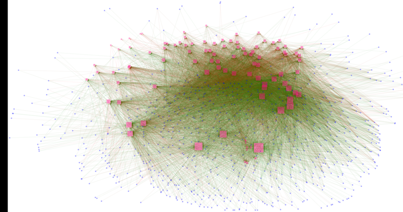(View source for necessary context): A Bimodal Network Graph of Movie Ratings Data Why XML Encoding Can be Great for Network Analysis
Most people who work on network analyses are probably not XML coders, since most network analysis tutorials presume that one's data is plugged into rows and columns on a spreadsheet or is already prepared in a simple plain text form. For most who apply network visualization tools, the "database" means a grid form. However, those of us who code in XML create an alternative form of a database, with "XML nodes" defined in terms of elements, which are organized steps moving through hierarchies of varying depths. The topography of an XML database is typically uneven and need not be flat to those of us who traverse it with XPath. Since network graphs can plot any kind of relationship involving a shared context of some kind, XML markup may be ideally suited for network plotting, since nested structures provide a basis for understanding shared contexts that form the edges in a network plot. XML text encoding in Digital Humanities projects often involves a combination of structural markup (of chapters, pages, paragraphs, line-groups, lines, etc.), contextual markup, and analytical markup (identifying linguistic features, motifs, proper names, dates, locations, etc). The combinations of our markup can be studied as networks of relationships, and a particularly easy one to plot from XML markup is a network of co-occurence, which plots where nodes occur together in particular contexts: Which proper names appear together (or "co-occur") most frequently in particular structural contexts, such as the unit stanza?
While network analysis may not be the right tool for every digital humanities job, for coders of XML there may actually be many distinctly interesting ways to plot data from the same related set of files, a very rich field of opportunity. What you will need to do is extract data into a tabular form that defines the nodes and edges on a network graph. Reach into your nested XML data, and extract it in a plain text tabular (.tsv or .csv) file that looks like everyone else's data imports. And perhaps you can go back and extract more data, with different nodes and edges.) A great reason to try plotting a network from XML structure might just be because you have a hunch that you might learn something interesting based on relationships you're beginning to see in your markup. Even if the plot is difficult to read at first, you can easily filter it if you can locate particular areas of interest within your plot, and in the process if you are using a powerful network analyzing tool like Cytoscape, you will learn about concepts in network theory, statistics of centrality, closeness, and distance by plotting your data according to network calculations built into the software program. I learned much about network statistics, and at the same time, Robert Southey's references to places in Thalaba the Destroyer by working with Cytoscape to see what I could see!
-
Why Try Cytoscape?
Of the open-source network analysis tools available to digital humanists, including Gephi and Palladio, Cytoscape may not seem an obvious choice for beginners to the field, though much may be gained and quickly learned by those willing to explore and customize its many options. Cytoscape is widely used in the biological sciences to analyze complex exchanges of information at the molecular level, and its applications in biology and chemistry have encouraged optimization of Cytoscape’s network graphics, allowing for considerable fine-tuning helpful for projects in many fields. Within the software program, users have a potentially bewildering but impressively diverse range of options for weighting and styling edges, sizing and coloring nodes, fine-tuning the organization of a network graph and filtering it to produce many discreet views is highly optimized and dynamic within the Cytoscape software program. Though some of that fine-tuning may be lost in the effort to export graphs to the web, the Cytoscape programmers as well as independent web developers have been working to produce javascript-based exports of the dynamic plots built in the software. (For those interested in making dynamic network plots available for web view, there is a Cytoscape Javascript Library, which does not offer the same array of graphs (not as many graphs optimized for reading the full range of network statistics supported in th software version). One can easily export labelled static SVG, PNG, or JPG images from Cytoscape’s interface for use in slides or web-based projects.
With its Network Analyzer tool, Cytoscape is especially helpful for applying many kinds of network statistics, and this makes it especially effective for scholars in any field to study their data by plotting it according to various measures of centrality (notably degree centrality, betweenness centrality, and closeness centrality) as well as to plot according to network path lengths to arrange one’s data in terms of network measures of “closeness” and "distance, all of which we'll discuss below as we work through our Cytoscape tutorial. For a brief and helpful introduction to the three most frequently discussed centrality measures, see Orgnet's "Social Network Analysis: A Brief Introduction". Because Cytoscape offers so many options to visualize network data, its plots are an especially good way to learn and study network statistics as well as to export network graphs optimized for legibility.
Most users of Cytoscape work with flat, simple hierarchical databases of information, and import graph data from spreadsheets or simple tables with columns and rows. We who code in XML with its deep nesting apply our markup to generate usually a more complicated kind of database in the branching of our tree structures. We need to prepare our data for view in Cytoscape by performing an extraction of the data we wish to plot from our markup.
{kind=link}
{kind=link}
Next, the How-To:
How to Prepare Data for Import into Cytoscape (Version 3.2)
Consider, first of all, what phenomena in your text you want to network together as your nodes, and what produces a connection between them as your edges. For what follows, I'm going to work with the data I used to prepare my network analysis of named places in the epic poem Thalaba the Destroyer, which I introduced earlier in this tutorial. In my network plot of Thalaba, I am studying how the places named and marked in my XML text are networked together inside line-groups, whether in the lines of poetry or in prose annotations marked within the line-group. So my nodes are the place names in the line-groups, and my edges are determined by the unit line-group, because position in a line-group marks a shared space or context for linkage. Each edge is designated as "main" or "note" depending on whether the shared relationship with other places occurs in the lines of poetry or in a footnote appended to a given group of lines (or stanza).
Different network analysis tools (Gephi, Pajek, Cytoscape) require different ways to import data. (This is why, I think, most people tend to use a specific network analysis software package, or work within “R” which produces its own network plots). For example, while Pajek requires its initial import data in two columns of nodes, Cytoscape requires data to be imported first in three main columns: Node Edge Node. That means that you’ll need to write a transformation in XQuery or XSLT to output in plain text a list of nodes, connecting points, and the node to which each is connected, with a separator of some kind. While Cytoscape (like other network software) accepts a range of import formats, the simplest and most reliable format I have found is a plain text file made of columns separated by tabs or commas, saved as .tsv (tab-separated format), or .csv (comma separated format). You could import this text into a spreadsheet program like Microsoft Excel, or any number of programs designed to recognize column layouts.
In Cytoscape, information that describes qualities of particular nodes or edges is known as attribute data, and we can have node attributes and edge attributes. Your first import to Cytoscape will only submit the node, edge, and node columns, plus a column identified as "edge attributes." You may import, in a second stage, the attribute information about your nodes. We can write XSLT or XQuery to output text arrayed in columns with a separator, knowing that we can import data in tab-separated or commma-separated columns. I prepare a single text file containing all of my node data, node attribute data, edge data, edge attribute data, and connected node data and connected attribute data, and I use that file twice: once to initiate the network, and again to add node attribute data.
Additional data might be specific information that describes your nodes and edges (known as "node attributes" and "edge attributes" in a network analysis context): In my Thalaba project, I differentiate between “place” and "metaplace" to distinguish two different kinds of place nodes which I then color-code in my output, so the values of "place" or "metaplace" are my node attribute data on any given place name. For my edges in the Thalaba project, I want particular information on which Book and line-group number forms a particular linkage, and this information is my "edge attribute data." I use XQuery to extract node names, edge data, as well as node attributes and edge attributes all together line-by-line with tab characters to separate the values, and use the resulting file to import to Cytoscape for network analysis.
To get an idea of how you'll need to extract your data, here is a sampling of my data from the Thalaba project, isolating the node "Yemen" at Book 4 line-group 218. In the first line of the table, I have applied bold to highlight the most important network information: the location of node 1, the edge value, and the location of node 2. The bold indicates the information that you identify in the first import. The other words here are "attribute data," information that modifies a node (node attribute data) or an edge (edge attribute data):
Yemen place note B4_lg218 Earth_planet place
Yemen place note B4_lg218 the planet Venus metaplace
Yemen place note B4_lg218 Bagdad place
Yemen place note B4_lg218 Yemen place
Yemen place note B4_lg218 Mecca place
Yemen place note B4_lg218 Mecca place
Yemen place note B4_lg218 Bombay place
Yemen place note B4_lg218 Heaven metaplace
All of these lines indicate a single node, Yemen, and a set of edges pointing to other places and metaplaces mentioned in the same line-group with Yemen. You need a separate line to indicate each connection. (Generating this tab-separated text output is ideally suited for “pull” XSLT using xsl:for-each, or better yet, XQuery set to output plain text.)
When writing your XQuery or XSLT to extract data:
- Write your data extraction code so that you produce plain text output, separated by a tab character, or by a comma and a white-space. (I recommend using a tab character in case your data contains commas in its nodes or edge data.) Use the special entity notation for a tab character: 	.
- Output a text file that contains, line-by-line, a tab-separated set of values: node, node attribute, edge, edge attribute, connected-node, connected node-attribute. Remember: You don't need all of these for your first import to Cytoscape, but you can re can reuse the same table to import data more than once.
- In XSLT, set your xsl:output statement (one of the required top-level elements in the xsl:stylesheet, usually found directly after the root node) to output text. Here's how to set it: <xsl:output method="text"/>
- In XSLT, work with xsl:for-each to loop through each reference to a place and to output its connecting information and other nodes. Read about XSLT for "pull" scenarios (when you want to use it extract specific data as you are here rather than output an edition of a text). My favorite resource on this is Obdurodon's XSLT tutorial: part 2, or Michael Kay's book, XSLT 2.0 and XPath 2.0, 4th Edition.
- In XQuery, write your output statement using string-join() and/or concat(), using the tab character 	 as your separator. You may need a new line character as well to be sure that lines are not run together in your output. Use a linefeed character: to generate a new line where you need it at the end of a string you've joined together.
- Do you need to "de-dupe" your node names? "De-dupe" means to de-duplicate or try to correct for spurious alternate spellings. In the course of extracting your data or in visualizing it, you may notice you need to work on this, perhaps by coding attribute values with a canonical spelling, or by keeping a central list of standard names and values to which each variant of a name refers. It's a common markup problem, and the process of data visualization can actually help you catch problems with this.
- Save your output file with the extension .tsv or .csv (for tab-separated values, comma-separated values). You'll use this file to import your data into Cytoscape.
How to Import your .csv or .tsv file into Cytoscape
First, do you have Cytoscape installed? The software is free and is available for all platforms from here: http://cytoscape.org/. The Cytoscape developers will indicate that you need a particular version of Java installed: check to be sure that you have it. This tutorial provides instruction using Cytoscape 3.2.1 (current as of March 2015), and my screen captures come from my installation for Windows 8.
When you first launch Cytoscape, you will see the following screen inviting you to Start a New Session, and on it you should select "From Network File...". (If you accidentally close this, just go to the File menu and select Import→Network→File.
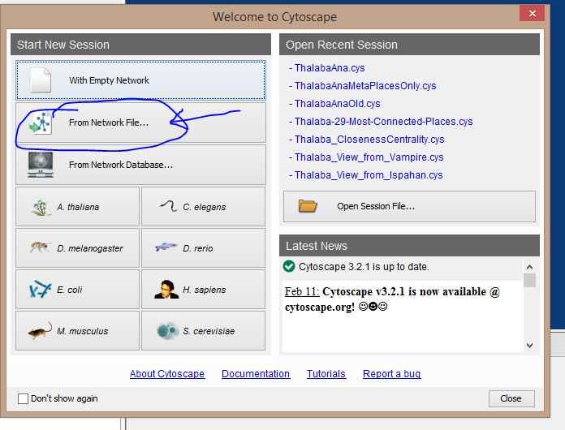Browse for your .tsv or .csv file and open it. You will see the following import screen:
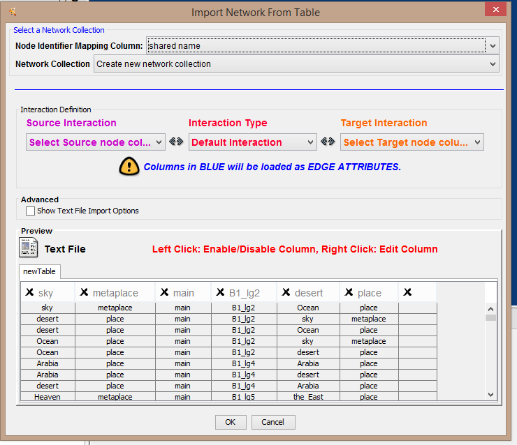Click on "Show Text File Import Options" under "Advanced", and open the choose the appropriate delimiter (or the kind of characters you used to separate your values (tab, comma, space, etc.)
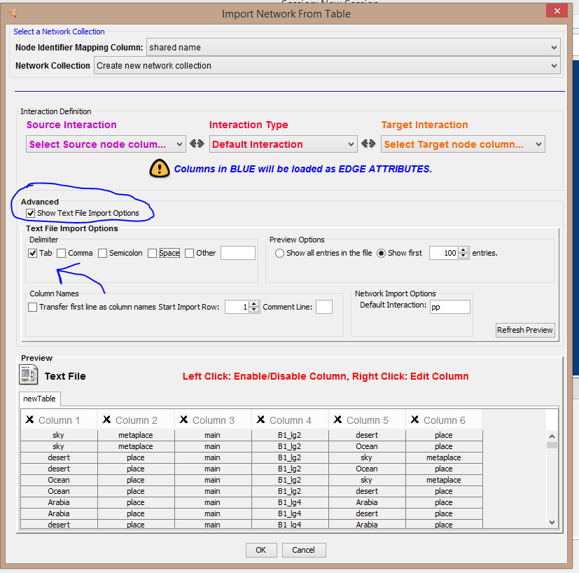If there have been no problems with your data extraction, your data should appear neatly arrayed in columns, which you can now select for your first immport. The first immport involves selecting the first Node column (as "Source Interaction"), the Edge column (as "Interaction Type", and the connected Node ("Target Interaction") columns. You can also designate one column in blue as Edge Attribute data. I leave the other columns (node attribute data) unselected for now. (I'll come back later and import node attribute data in a second import round--that's how Cytoscape handles this.) Here's how my screen looks when I've selected these first columns for import. (Note: I selected the columns for Node Edge node at the top of the screen, and then I clicked on Column 4 to turn it blue so it would be designated the Edge Attribute column.)
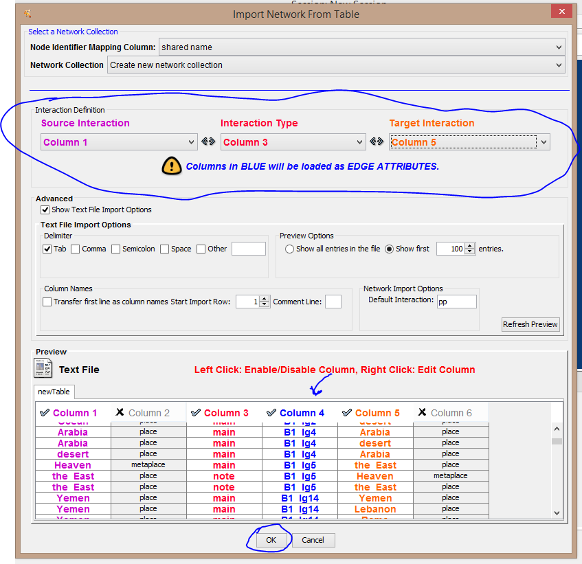When you have selected your columns for import, click "OK" at the bottom...wait a bit, and voila! But this will look like a gargantuan tangle of square grids at first:
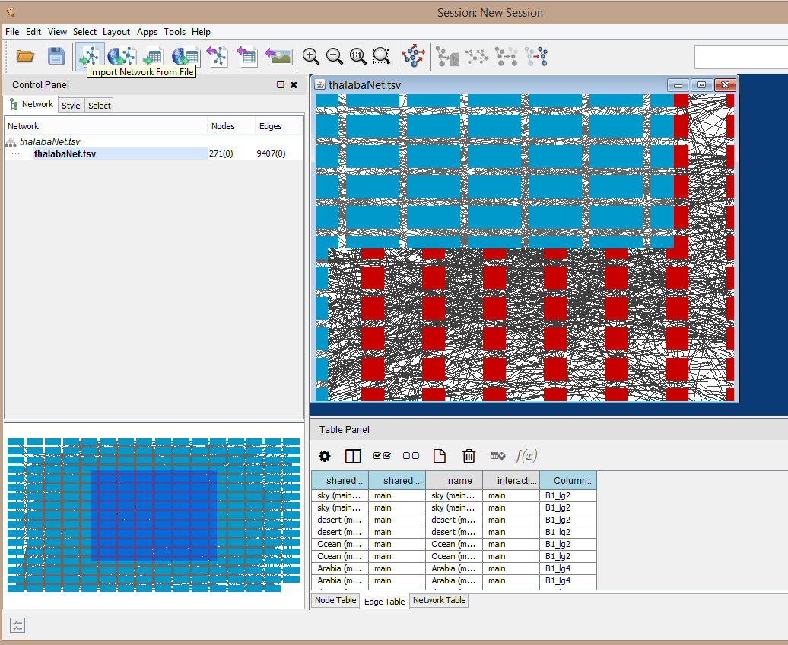Notice the Table Panel at the bottom of the screen. You can toggle it to view Node data, Edge data, or (less usefully) Network data. I've toggled the Edge data view here because it displays information about my nodes and edges together. Try clicking on any line in the Node table or Edge table view, and see if you can highlight its corresponding node or edge in the view of the network in the bottom left of the screen. This feature in Cytoscape allows you to read and navigate your network by sorting and selecting your nodes in the table, and is a useful reminder that your network is something more than its graphical visualization.
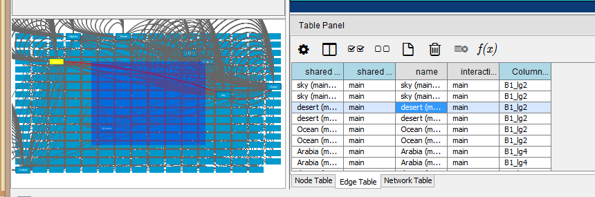Now, let's go back and import the rest of our data, the bring the Node Attributes into the Table Panel. To do this, go to File→Import→Table→File (notice this is slightly different from before: now you're simply understood to be importing new data from a *table*, not something that's represented as a network. Open our .tsv file again here. This time we import by correlating a column of new data against a "key column," that is, a column you designate that matches one of the node columns you imported.
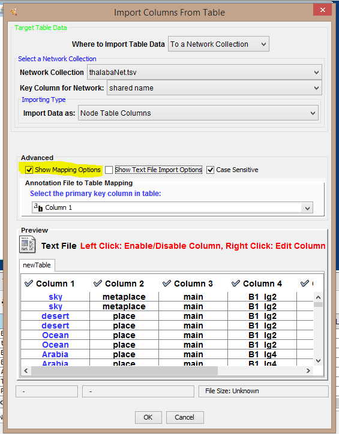This time, under "Advanced," you see an option for "Show Mapping Options," and selecting this allows us to identify a key column, and to select or deselect other columns for import. Since each of your nodes is going to be listed in the first column anyway, there is generally no need to import both columns of node attribute data. Choose the first column as your key (or be sure the appropriate column is checked; it will be colored blue. Then you need to be sure that only the appropriate columns are imported as new data. That means deselecting the other columns. (And notice, just as when you first imported your .tsv file, you can "Show Text File Import Options" to ensure that the proper delimiters (in this case a tab character) are delimited.
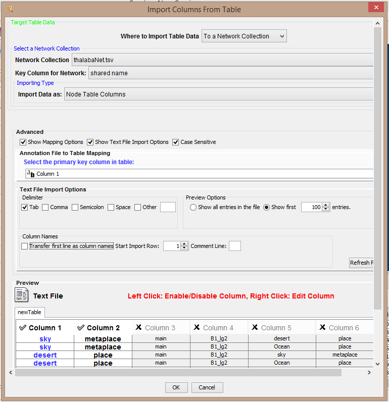When you click "OK," notice that your new columns are added to the Node Table in the Table Panel. We'll make use of the data you imported later, when we add color to differentiate one kind of node from the other based on the node attributes: In this case we'll use the information to distinguish between "place" and "metaplace" in the Thalaba data.
Okay, let's try to make a more legible graph. To begin, we might just look at Cytoscape's "Preferred Layout" feature, by clicking on the left-most icon that looks like a tiny network:
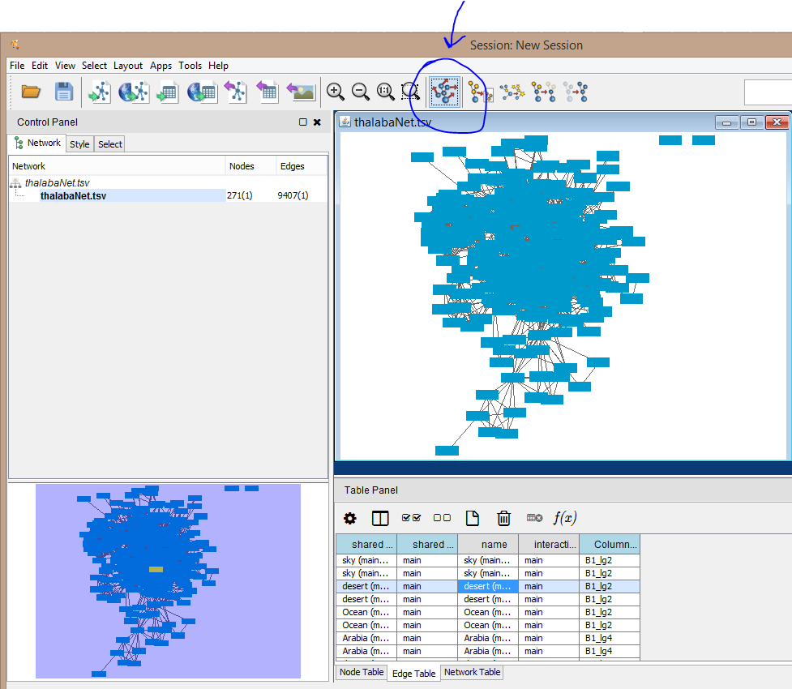For all kinds of reasons, the layout that Cytoscape selected for me (a Prefuse Force-Directed Layout) is not really appropriate for my data. (You can read about Force Directed Layouts here: they are designed to be aesthetically pleasing by designing edges to behave like physical springs, obeying laws of attraction and repulsion, based on a node's degree of connectedness: less connected nodes are pushed to the peripheries, and highly connected nodes "spring" to the center. I am not a fan of this layout because my nodes seem buried inside each other: this does not seem very legible or useful to me. Let's explore some other options.
First of all, there may be some housekeeping duties we can perform to tidy up the network and make it easier to read and process. I extracted all of my place names from my poem, regardless of how many times the same place name was mentioned in a particular line group, so that I have many nodes that simply point to themselves. These are called "self-loops" and they generate much "noise" (lots of extra edges) in Cytoscape. Since I am not really interested in the number of times a name is repeated in a stanza, and I want to prioritize its connections with other names in that stanza, I am going not remove the self-loops. I do that by using the Edit menu: Edit→Remove Self-Loops. That brings up a small screen on which I must select my .tsv file, and verify that I want to remove the self-loops:
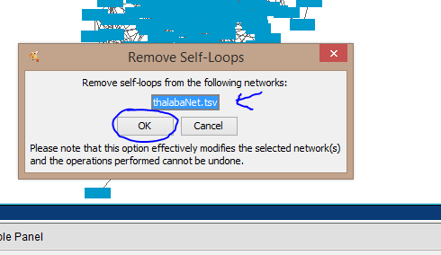If you just want to explore Cytoscape's various built-in layouts for picturing my network, you can simply go from here to experimenting with the various options in the Layout menu. Many people are content to do this, and to begin work styling nodes and edges on a reasonably legible plot. I recommeend that you do something more, to use Cytoscape's Network Analyzer the better to read your network analysis, because this is where Cytoscape distinguishes itself in providing very useful readings combined with layouts.
What to Do and See with Cytoscape's Network Analyzer, with a List of Network Analysis Concepts
Go to Tools→Network Analyzer→Network Analysis, and notice the options on the submenu. If I click on "About Network Analyzer" this screen appears telling me something of its capacities:
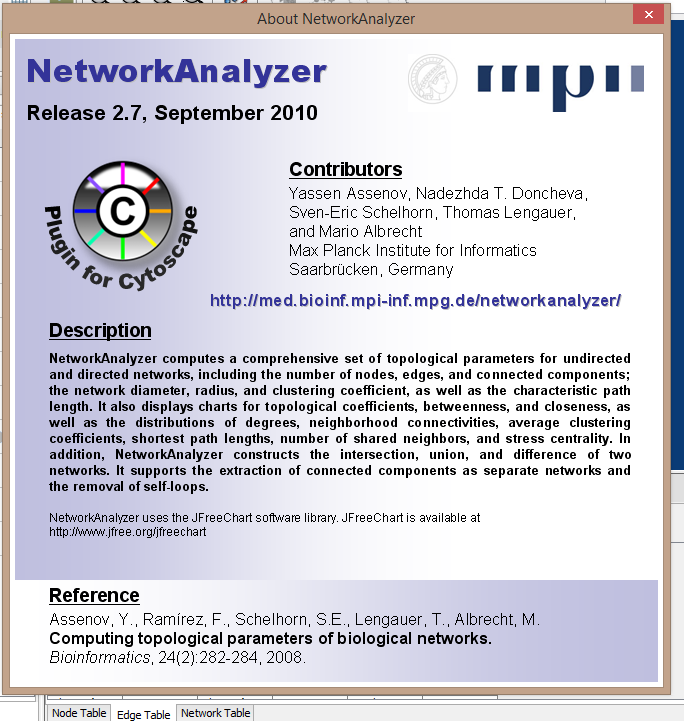This is Cytoscape's "network calculator," which applies programmed algorithms to the data set you imported to work out readings for various mathematical properties of networks. These include the forms of centrality we mentioned earlier in this tutorial, as well as other network measures to do with calculating and ranking nodes by how much they cluster together and form "cliques" or "small worlds" that prefer only to connect with each other and not widely across the network.
Run the Network Analyzer by choosing the first option on the submenu: Tools→Network Analyzer→Network Analysis→Analyze Network. You'll see a screen that looks something like this, and you'll need to make a very important decision here:
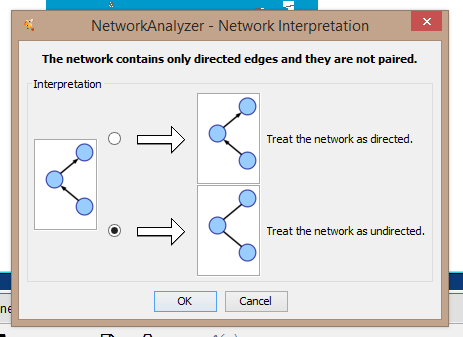You need to mark here whether your network is directed or undirected. Do you remember the difference between two? A directed network marks clear initiators and recipients: this is the kind of network you could draw with arrows pointing in a particular direction from a node to another node. An undirected network involves relationships that are based on mutually shared properties, so it can't be said that one party is an active agent and the other a passive recipient. (Perhaps both are equally active or equally passive). Because my Thalaba data makes a co-occurrence network, that means I don't have active and passive nodes, but rather my node relationships are based on mutual presence in the same part of a text at the same time. So I choose the option to "Treat the network as undirected" here, and wait for a few minutes while the Network Analyzer performs its calculations.
When the Network Analyzer is finished, it produces a new screen, and it adds several new columns to my Table Panel!
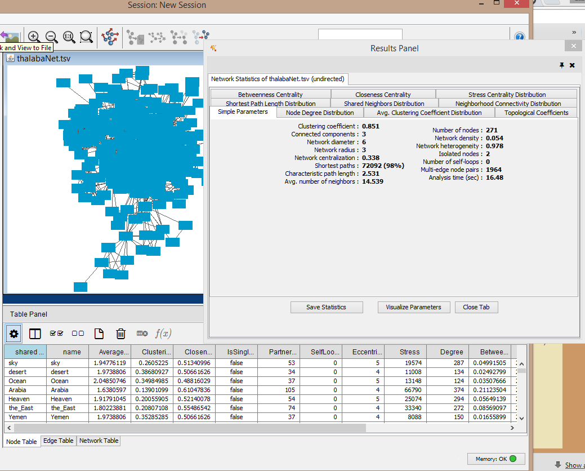I encourage you to explore these new properties. Once you have run the Network Analyzer, Cytoscape makes several new kinds of layouts available (in the Layout menu) that were not present before. You should do a combination of things at this point: Read about the various centrality, path-length, and clustering measures of networks, and illustrate their principles as you're learning by making Cytoscape plots that prioritize a particular network property. An excellent resource to dive into for studying these network properties is Introduction to Social Network Methods by Robert A. Hanneman and Mark Riddle (2005, online book). Here is a working list of key terms and concepts in network analysis that I have compiled on my blog site, distilled from my reading.
The Network Analyzer has a) added new columns of numbers to your data
In the Table Panel, go to the Node View, and click on the gear symbol to toggle the various view. With "Show All" selected, find the new column headed "Degree" and click on it to sort the nodes by their degree from highest to lowest. All of these columns have been added to the data you originally uploaded, and they are available to work with to help you in reading and laying out your network graphs.
What new layout options are now available? Go to Layout→Group Attributes Layout. This is a new group of layouts that became available as soon as you ran the Network Analyzer. You will see that these layouts are based on things like "Average Shortest Path Length, Degree Centrality, Clustering Coefficient, and many more. Try these out to look at the way your data is plotted, and read about each concept to see what the plot can tell you about the properties of your network. In the plot below, I have chosen "Closeness Centrality" in the Group Attributes Layout. This plots my nodes from left to right and from top to bottom, acccording to increasing (and decreasing) closeness centrality values. The graph is plotted so that the nodes with the highest closeness centrality values (the ones that are just a comparatively few steps away from all the other nodes in the network) are plotted along the bottom, with the least close (or the most distant) nodes set up at the top.
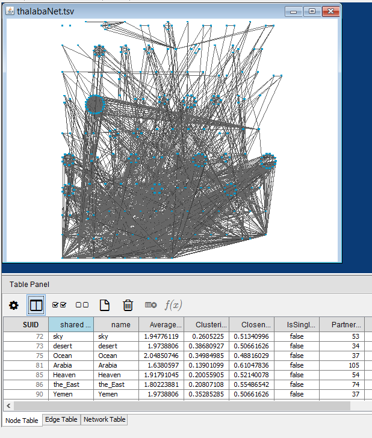Find a meaningful way to plot your network that tells you something you might not have been able to see before you had plotted anything. Let's go on to fine-tune the styling of nodes and edges in the graph, based on the node and edge attribute data you imported, and the numerical data added by the Network Analyzer.
Styling Nodes, Edges, and Labels
To style your nodes, use the Control Panel, set on the left side of your view screen in Cytoscape. Select Style at the top, and at the bottom select Node: We'll start by styling the fill color of the nodes based on the node attribute data we imported.
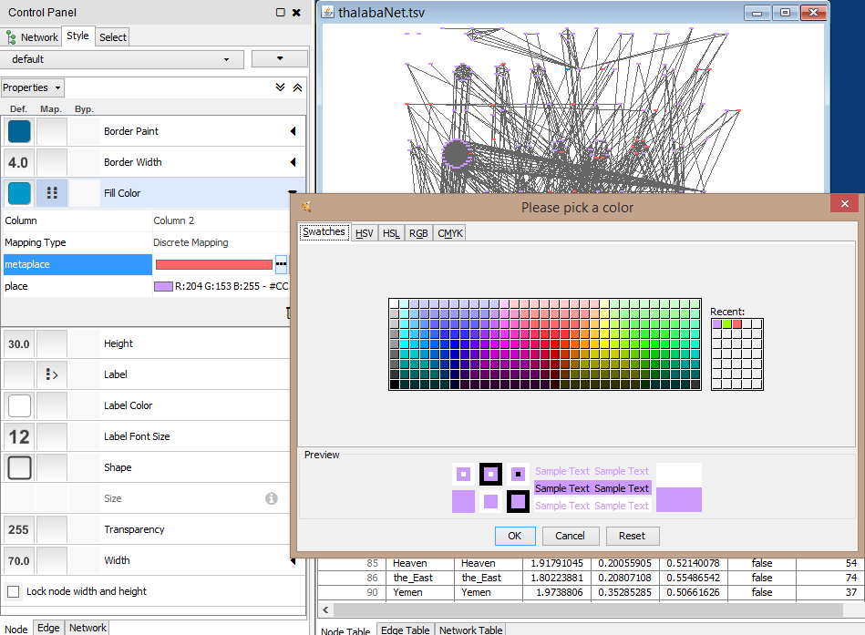Notice in the example that I have a) made a selection of a column of data from my Node Table, and it's the column of node attribute data that I imported to distinguish places and metaplaces in my data set. I have b) set the Mapping Type to "Discrete Mapping". My options here are "Discrete Mapping," (which gives me a distinct property for each value in the column of data I've seleccted), and "Passthrough Mapping (which ignores the selected property and plots all the nodes the same way. If I choose Discrete Mapping, I can set two different colors for my two kinds of nodes.
Let's style one other thing in the Node Table so I can show you a third "mapping" option called "Continuous Mapping." I'd like to make my nodes smaller or larger depending on their degree (the number of edges connected to them). Note: In Cytoscape 3.2.1 I need to activate the "Size" property of a node by selecting "Lock node width and height" at the bottom of the Control Panel. Choose the Degree column to control this node property, and then notice that a new kind of mapping is available: "Continuous Mapping": use this to for a series of numerical values to be plotted continuously.
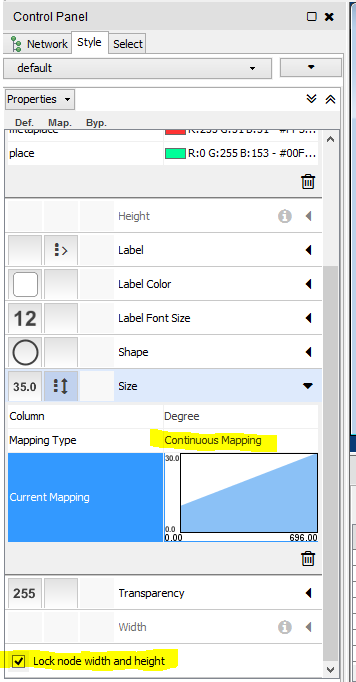Notice that you're shown a little graph with an X and Y axis and a line. You can manipulate that line and its curve and slope in order to fine-tune the node size (or other effect that you want to control with continuous mapping). Double-click on the little graph and it opens up a window you can edit: Notice what happens as you drag the ends of the line up or down, adjust the slope, or add handles to create a curve: You can see the effects in real time on your network graph.
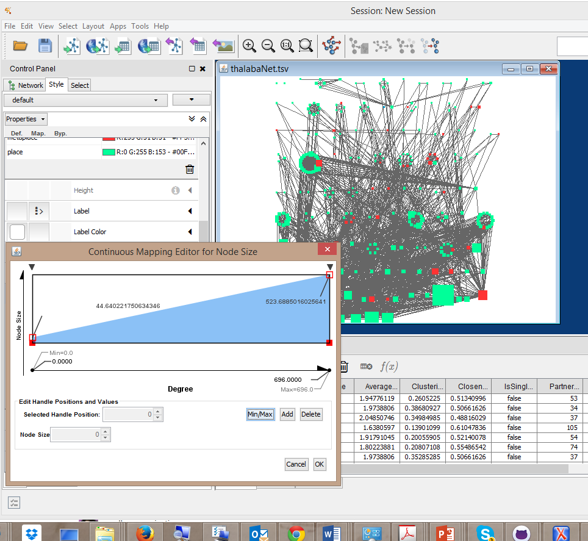You'll also want to edit things like the node labels, where you can choose from among a very large menu of fonts and font sizes. Cytoscape has far more capacity to edit nodes and edges than you see at first in the Control Panel, and to reveal them all, click on the Properties tab at the top (highlighted here):
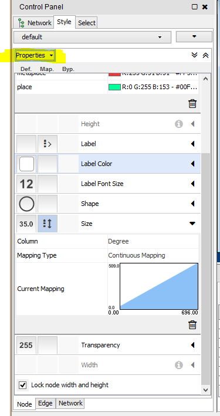Switch over to the Edge tab (still under Style) to edit your edge properties. Here you can do things like apply Discrete Mapping to give your edge lines distinct colors and textures. In the Thalaba project, I make the note edges appear a different color and give them a dotted line, and give solid lines to the main text. Experiment with what works best to visually distinguish the properties you care about. You'll perhaps want to apply Continuous Mapping to apply weight (or "to weight") your edges based on your edge attributes.
You also have a few options to style the Network as a whole: Click the Network tab at the bottom (again, still under Style), and notice how you can edit the background color here.
Under Layouts→yFiles Layouts is a series of plots which include options to scale up or down (Scale 2X or Scale 1/2X) your node sizes. This can be handy for rendering your nodes and node labels more visible before a presentation!
Filtering Data and Preparing Multiple Visualizations
What if we want to filter our network to show only a portion of it, perhaps the portion with the most highly connected nodes, or only the nodes or edges of a particular kind? To experiment with filters, go to the Control Panel and choose the Select tab. There are options here for filtering based on columns of your Table Panel, or based on network properties such as a number of neighbors or the distance between nodes.
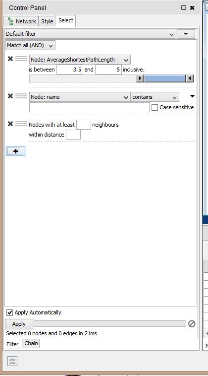There's another, simpler way to filter your network. Try selecting a node on your graph in the main window, and mouse over the little network icons above the graph to see the options here: You can select the first neighbors of a selected node (to expand a selection). You can toggle that a few times, to keep collecting node "neighbors" another path step away. Then, toggling a different network icon, you generate a new network based on that selection. This can be very helpful for displaying targeted views of a portion of a network.
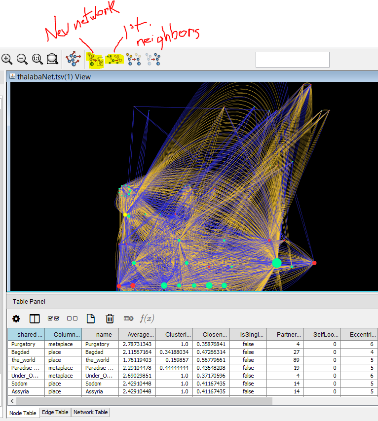The network view above is an example of such an extraction from one of the more highly connected nodes in the Thalaba project.
Viewing and manipulating your graph from within Cytoscape gives you dynamic options for pulling and dragging nodes, highlighting them, selecting them to highlight their position on the node table. You can also add text to your network graph to create a title and a legend, simply by clicking on the background--which brings up a menu offering various kinds of annotations. You can draw arrows to label portions of your graph. Sooner or later, though, you will need to consider your options for exporting your graph(s) to view outside of Cytoscape.
The simplest export is one that loses the dynamic features present in the Cytoscape software, but exports your graphics cleanly with the detail you applied: Go to File→Export→Export Network as Graphics, and export your file as either an SVG or a PNG file. Exporting as SVG means you can open the coded file to explore how to maninpulate it and make it dynamic with JavaScript on a web page with a some effort.
The Cytoscape developers have also been working on making dynamic web views of the graphs produced within the Cytoscape software. To produce this, try Export Network View(s) as Web Page, which will output a zip folder. Extract the files to mount on a web server. The result is a dynamic graph in whihc users can click and drag nodes, and some of your style parameters have been preserved. Here is an example dynamic view of the Thalaba network posted live, plotted according to closeness centrality of the nodes. To view my formatting, you need to change the background to "default-black".
Over time, the Cytosocape developers and the independent developers of the Cytoscape.js JavaScript library seem to be improving the capacities to visualize dynamic plots that preserve the fine-tuned styles and plots we are able to design within the software. That said, multiple static views taken from different kinds of plots and different filtrations of data may help to illuminate patterns in your network more effectively than a single dynamic plot. Happy experimenting!